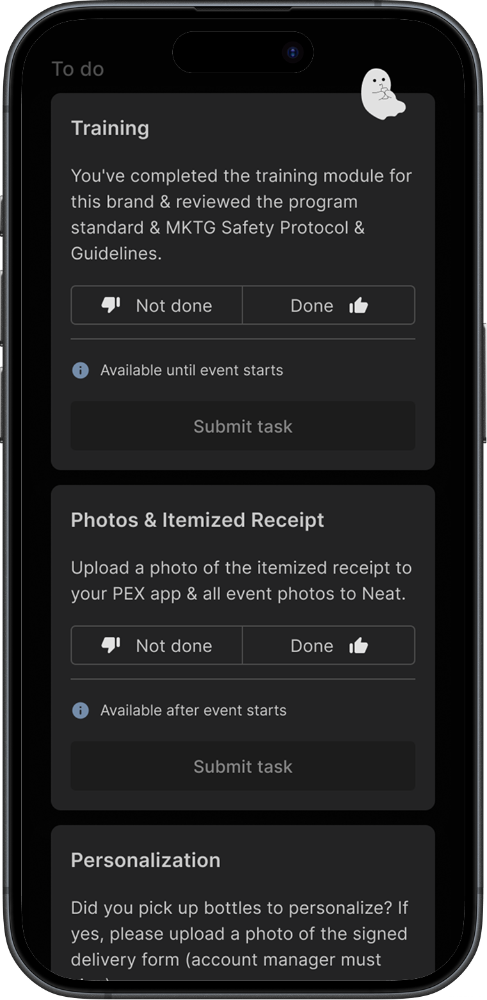
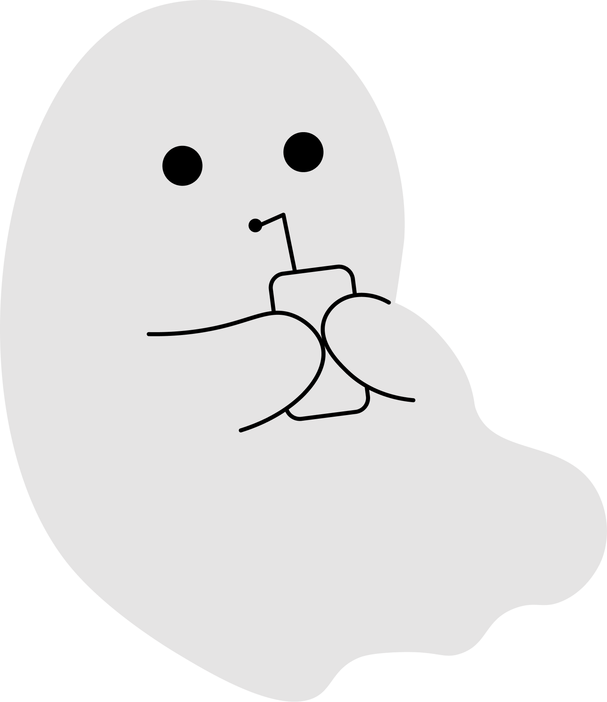

Case Study · 01
Boosting feature engagement through whimsical interventions

Case Study · 01
164%
average increase in feature adoption
550%
peak boost in specific profile interactions
64%
average email interaction rate
Throughout the year, a company managing 1,500+ employees across North America released seasonal themes to drive platform affinity. This project introduced a "ghost hunt" gamification layer to boost adoption of underused mobile features.
After eighteen months in production, data showed that several key features on the platform remained underutilized. These touchpoints were critical for operational efficiency, and the product team aimed to increase adoption to improve the overall staff experience. However, internal business rules prohibited mandating usage (the "stick" approach), so we had to find an organic, incentive-based ("carrot") way to drive interactions.
With Halloween approaching, the design team proposed a seasonal campaign to guide users toward these features — including the upcoming "Dark Mode" release. We launched an omni-channel campaign consisting of a series of timed emails and five hidden "ghosts" placed strategically near high-value, low-usage components. Each ghost was introduced via email with a unique backstory, transforming a standard UI task into a narrative-driven "hunt."
Process
Throughout 2026 our platform had seasonal theme releases, and Halloween would be combined with Día de los Muertos, with the campaign expanding from October 20th to November 3rd. I finished illustrating all elements by mid-September and the placements were decided not long after that.



During a stakeholder meeting, a concern was raised regarding the underutilization of features like "Event Check-in" and "Task Management." Since adherence relied heavily on manager encouragement rather than system requirements, the design team suggested using the seasonal theme as an awareness vehicle. As the lead illustrator and designer for the ghosts, I was responsible for the visual identity of the campaign, while collaborating with the team to architect the campaign flow, define the UX copy for the ghost backstories, and create the technical documentation for precise asset placement. The team also pitched to stakeholders together, securing full creative autonomy for the campaign.
Initially, we planned for a cross-platform campaign, since the theme would be launched for both app and desktop. However, after consulting with the engineering team, we opted to focus only on mobile, given the strict two-week production window. This allowed us to maximize impact within a smaller, more controlled user pool while ensuring high-quality execution.


By analyzing our product analytics, we identified four high-impact features with the lowest engagement. To maintain the "hunt" integrity, we established a specific feedback loop: when a user discovered a ghost, a modal appeared revealing its unique backstory. Once closed, the ghost would disappear, ensuring a one-time interaction that felt like a genuine "find." We also decided to leverage this high-traffic moment to launch Dark Mode, making the Dark Mode Toggle the final destination of the campaign.
Each ghost had its own unique personality, matched to where they would be hiding. Their names are a spookification of drink-related words.

Apparition Spiritz
A nurturing ghost who encourages the newest team members, leaving them encouraging little messages.

Boourbon
A sweet-natured ghost who makes sure all the bottles are filled and neatly arranged before the party starts.

Ghoul-fashioned
An energetic ghost who floats between guests, ensuring their glass is always full.

Phantom Fizz
An elegant ghostly mixologist who leaves behind recipes for forgotten classic cocktails.

Piña Ghoulada
A friendly and whimsical ghost who oversees gift bags and takeaways, making sure every guest leaves with a little something special.
Having tracked the app for six months prior, we had a robust baseline for user behavior. We used Pendo to track the new flows, and after the campaign was over, we presented a comprehensive performance report to the company's stakeholders.
Adoption Spike
All five targeted features saw increased engagement, with "Edit Profile" seeing a 550% boost.
Behavioral Attribution
66% of the initial Dark Mode adoption was directly attributed to users who engaged with the ghost hunt.
Email-to-App Conversion
Data confirmed that ghosts with higher email open rates saw proportionally stronger component performance, validating our omni-channel strategy.
I recognize that the meticulous care put into a product is not always visible to the end-user, who is there to do their job and get on with their lives. However, this didn't stop me from pouring my best into every seasonal theme. For the Halloween campaign, with our five friendly ghosts that I so enjoyed doing, the effort was even higher. While my mind was focused on meeting hard engagement KPIs, my goal was to provide a moment of genuine delight — turning a routine work tool into something that could make a user's day a little brighter.